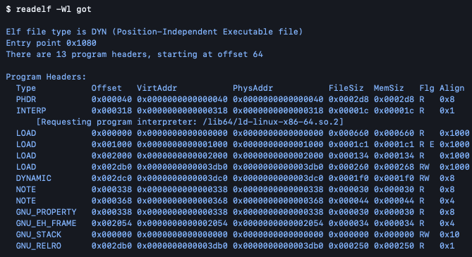
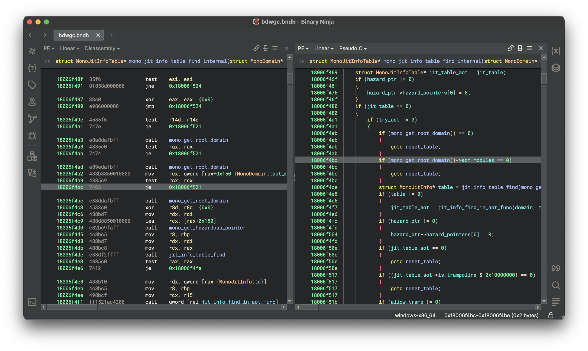

Offensive Security Engineering
Hands-on offensive security challenges tackling 20+ real-world malware samples and security vulnerabilities that combine reverse engineering, memory corruption analysis, and web application exploitation to develop adversarial intuition and enterprise-grade remediation skills.
[SCROLL TO EXPLORE]
View Writeups
The Problem
Textbook security knowledge only goes so far. CTF challenges force you to think like an attacker: working backwards from a compiled binary, a memory dump, or a broken web application to understand exactly how and why something is exploitable. The goal here wasn't just to capture flags; it was to build the kind of adversarial reasoning that translates directly into better defensive and remediation work in enterprise environments.
What's Included
- Reverse engineering of 20+ malware samples to identify threat actor TTPs and attack chains
- Root cause analysis across 20+ security vulnerabilities spanning memory corruption and application security
- Binary analysis using Binary Ninja to deconstruct unknown executables and identify exploitation paths
- Web application vulnerability assessment with documented findings and remediation recommendations
- Findings translated into formats suitable for both technical teams and senior leadership
Impact
Working through 20+ malware samples and an equal number of vulnerabilities back-to-back builds a pattern recognition that's hard to get any other way. Each reverse engineering session deepened the ability to map unknown binaries to known TTPs and develop bespoke exploits, and each vulnerability root cause analysis sharpened the instinct for where code breaks down under adversarial pressure — skills that show up directly in penetration testing, incident response, and security code review.

Technical Stack
- Ghidra: NSA-developed reverse engineering and binary analysis framework
- Binary Ninja: binary analysis and disassembly for malware inspection
- Burp Suite: web application vulnerability testing and exploitation
- GDB: GNU debugger for dynamic binary analysis and memory inspection
- MITRE ATT&CK: TTP mapping and threat actor behavior classification
- Python: bespoke solver scripts for binary exploitation and unintended program behavior
- pwntools: CTF exploit development framework for crafting and automating binary exploits